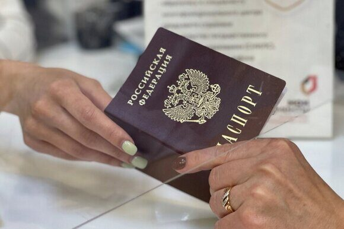

« НазадКак обновить паспорт после развода и начать новую жизнь Развод — событие, которое становится отправной точкой для многих перемен в жизни человека. Помимо эмоциональных и социальных перемен, развод влечет за собой необходимость обновления многих официальных документов, одним из которых является паспорт гражданина РФ. Паспорт отражает не только личность, но и актуальное семейное положение, что может оказывать влияние на дальнейшие взаимодействия с государственными органами, банками и работодателями. Актуальность темы обусловлена постоянными изменениями нормативной базы, требующей от граждан учета новых правил регистрации и замены документов. При расторжении брака возникают вопросы: требуется ли обновление данных в паспорте? Какие изменения следует внести? Какие документы нужны для оформления нового паспорта? Цель этой статьи — предоставить подробное руководство по оформлению паспорта после развода, рассмотреть правовые основы, описать особенности процедуры, этапы подготовки и оформления, а также предложить практические советы для успешного прохождения всех этапов, актуальных в 2025 году. Правовые основы оформления паспорта после разводаОформление паспорта после развода регулируется рядом законов и нормативных актов РФ, среди которых ключевыми являются положения Гражданского кодекса, Федерального закона о порядке выезда и въезда в Российской Федерацию, миграционные нормативы МВД и изменения в административном законодательстве. При разводе гражданину необходимо удостовериться, что в его официальном документе отражается актуальное семейное положение. Это важно не только для корректного ведения учета, но и для избежания возможных административных сложностей в будущем. Основным органом, осуществляющим выдачу паспортов, является Управление по вопросам миграции МВД, которое отвечает за внесение корректировок в базу данных. Любые изменения в документе должны быть зафиксированы официально, а процедуры оформления подвергаются строгому контролю. Важно отметить, что в некоторых случаях изменения могут затрагивать другие документы, например, СНИЛС или ИНН, поэтому необходимо проводить синхронизацию данных во всех ведомствах. Особенности оформления паспорта после разводаПри оформлении паспорта после развода важно понимать, что происходит не просто смена документов, а внесение изменений в данные, отражающие новый статус гражданина. Если после развода изменяется фамилия или иные персональные данные, то в обновленном документе эти сведения должны быть актуализированы. Если же данные остаются прежними, оформление паспорта может проводиться для фиксации факта развода, что является важным с точки зрения ведения единой базы данных. Особенности процедуры заключаются в следующем:
С чего начать: подготовительный этапПервый шаг в процедуре оформления паспорта после развода — тщательная подготовка. Рекомендуется обратиться за консультацией к юристу или сотрудникам ЗАГСа, чтобы выяснить, какие изменения в паспорте действительно требуются и как правильно оформить необходимые документы. Консультация позволит избежать ошибок при заполнении заявления и поможет собрать полный комплект документов. В процессе подготовки следует обратить внимание на следующие моменты:
Необходимые документы для оформления паспорта после разводаЧтобы процедура оформления прошла без сбоев, гражданину необходимо собрать полный пакет документов. Перечень может варьироваться в зависимости от региона, однако стандартный набор включает следующие позиции: Действующий паспорт гражданина РФ. Этот документ является основой для внесения любых изменений и подтверждает личность гражданина. Свидетельство о расторжении брака. Официальное подтверждение развода необходимо для внесения изменений в семейное положение. Заполненное заявление на оформление или замену паспорта. Заявление должно быть оформлено в соответствии с требованиями паспортного стола, где подробно указываются все изменения. Фотографии установленного образца. Качество и размер фотографии играет большую роль — именно от этого зависит, примут ли ее сотрудники МФЦ или отделения УВМ МВД. Квитанция об оплате государственной пошлины. Оплата госпошлины является обязательным этапом, поэтому необходимо сохранить квитанцию. Дополнительные документы. В некоторых случаях могут потребоваться подтверждения адреса проживания или сведения ИНН и СНИЛС, особенно если данные этих документов также нуждаются в обновлении. Порядок оформления паспорта после разводаПосле сбора всех необходимых документов начинается непосредственно процедура оформления паспорта. Современные технологии позволяют ускорить процесс — заявление можно подать в МФЦ, отдел УВМ МВД или через портал госуслуг. При этом порядок оформления включает несколько последовательных этапов:
Сроки и стоимость оформленияСроки и стоимость оформления паспорта могут варьироваться в зависимости от загруженности ведомства, выбранного режима оформления (стандартный или ускоренный) и региона проживания. Обычно стандартный срок составляет от 5 до 30 рабочих дней. Однако для граждан, которым требуется срочное обновление документов, предусмотрены ускоренные процедуры, позволяющие сократить время ожидания даже до нескольких дней, что требует уплаты дополнительной пошлины. Размер госпошлины в 2025 году за оформление паспорта - 300 руб. Возможные сложности и нюансы в процессе оформленияПри оформлении паспорта после развода граждане могут столкнуться с рядом проблем, связанных как с бюрократическими процедурами, так и с ошибками при заполнении документов. Рассмотрим наиболее распространенные сложности:
Чтобы минимизировать возможные проблемы, рекомендуется заранее проконсультироваться со специалистами, тщательно проверить все документы и по возможности записаться на прием через онлайн-сервисы госпорталов. Ответы на часто задаваемые вопросыНиже приведены ответы на наиболее волнующие вопросы, которые возникают при оформлении паспорта после развода: Нужно ли оформлять паспорт, если данные не изменяются? Нет. Если данные не изменяются, достаточно обратиться в ЗАГС и поставить штамп на 14-15 странице паспорта РФ о расторжении брака. Какие документы обязательны для подачи заявления? Основной пакет документов включает действующий паспорт гражданина РФ, свидетельство о расторжении брака, заполненное заявление, фотографии установленного образца и квитанцию об оплате госпошлины. Дополнительно могут потребоваться подтверждения адреса или сведения ИНН и СНИЛС. Влияет ли срок, прошедший со дня развода, на оформление паспорта? Срок не является решающим критерием, однако чем дольше проходит время, тем выше вероятность расхождения данных в различных регистрах. Рекомендуется обновить документы как можно быстрее после расторжения брака. Можно ли оформить новый паспорт без личного присутствия гражданина? В большинстве случаев личное присутствие обязательно для прохождения этапов биометрической съемки. При определенных условиях оформление через доверенное лицо возможно, однако требуется нотариально заверенная доверенность. Что делать, если устаревший паспорт утерян? При утрате паспорта необходимо предоставить заявление о его потере, обратиться в органы МВД для оформления временного удостоверения личности, а затем приступить к оформлению нового документа. Какова стоимость оформления паспорта после развода и где ее уточнить? Актуальные размеры госпошлины публикуются на официальных порталах МВД и госуслуг. Точная сумма зависит от режима оформления (стандартный или ускоренный) и региона проживания гражданина. Сколько времени занимает процесс оформления? Стандартный срок оформления составляет от 5 до 30 рабочих дней. В случае необходимости срочного оформления срок может быть сокращен, но за это придется доплатить. Как исправить ошибки, обнаруженные в паспорте? Если в оформлении выявлены ошибки, следует обратиться в паспортный стол с оригиналами документов для внесения корректировок. При обнаружении ошибки по вине сотрудника можно запросить официальное исправление. Будут ли обновлены данные в других документах? При корректном оформлении нового паспорта информация обновляется в государственной базе, что способствует синхронизации данных в СНИЛС, ИНН, банках и прочих заявлениях. Однако рекомендуется самостоятельно проверить и при необходимости указать актуальные данные в сопровождающих документах. Что делать, если нужна срочная замена паспорта? В случае необходимости немедленного получения нового документа можно обратиться за ускоренной процедурой. Важно помнить, что такой режим оформления требует дополнительных расходов, но позволяет значительно сократить сроки получения паспорта. Советы и рекомендацииЧтобы процесс оформления паспорта после развода прошел максимально гладко, предлагаем несколько практических советов: Тщательно проверьте комплект документов. Перед подачей заявления сверяйте все данные, фотографию и квитанции, чтобы избежать ошибок, которые могут привести к задержкам или отказу. Обращайтесь за консультацией в профильные учреждения. Юридическая помощь и консультации сотрудников МФЦ или УВМ МВД помогут разобраться в нюансах оформления в вашем регионе. Используйте онлайн-сервисы для предварительной записи. Электронные порталы государственных услуг позволяют сократить время ожидания и минимизировать лишние поездки в МФЦ или отделение УВМ МВД. Храните копии всех документов. Это позволит вам оперативно реагировать на возможные запросы и избежать проблем в случае утраты оригиналов. Следите за обновлениями законодательства. Правила оформления паспортов могут меняться, поэтому регулярное информирование о последних изменениях обеспечит корректность ваших документов. ЗаключениеОформление паспорта после развода — это не просто процедура обновления бумажного документа, а важный шаг, отражающий новый этап в жизни гражданина. Заблаговременная подготовка, индивидуальный подход и контроль за соблюдением всех норм законодательства помогут вам без лишних затрат времени и нервов получить новый паспорт. Помните, что инвестиция в корректное оформление документов — инвестиция в ваше спокойствие и порядок во всех сферах жизни. Быстрое оформление паспорта после развода – эксперты «Север» готовы помочь!Планируете обновить документы после развода, но нет возможности тратить месяцы на бюрократические проволочки? Паспортно-визовый центр «Север» поможет Вам решить этот вопрос максимально быстро и без лишних хлопот. Мы предлагаем услугу срочного оформления паспорта после развода, позволяющую за считанные дни получить новый документ и начать новую жизнь. Наш опыт – более 25 лет успешной работы гарантирует высокую квалификацию специалистов, индивидуальный подход и полное сопровождение на всех этапах оформления. Мы знаем, насколько важно иметь актуальные документы для бизнеса, путешествий или оформления прав на имущество, и поэтому гарантируем оперативное оформление паспорта, точно в срок. Почему выбирают нас?
Не позволяйте бюрократии тормозить Ваши планы. Позвоните нам прямо сейчас по номеру +79255854195 и узнайте, как легко и быстро можно обновить паспорт после развода вместе с профессионалами паспортно-визового центра «Север». Начните новую жизнь с новым паспортом – быстро и без лишних забот!
|
Комментарии
Комментариев пока нет